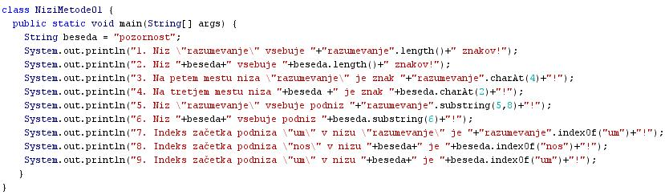
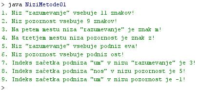

METODE NA NIZIH - PRVI DEL
- Doloèanje dolžine izbranega niza:
- Dolžina niza je podana s številom znakov, ki jih niz vsebuje.
- Primer ugotavljanja dolžine niza: "razumevanje".length();.
- Program v Javi bi v zgornjem primeru vrnil vrednost 11.
- Niz z vrednostjo "razumevanje" vsebuje namreè enajst znakov.
1 2 3 4 5 6 7 8 9 10 11
r a z u m e v a n j e
- Zgornji primer lahko razdelimo na dva dela.
- Prvi del ("razumevanje") je niz, na katerem bi radi izvedli metodo, s katero bi želeli ugotoviti dolžino tega niza.
- Drugi del (length()) je metoda ali funkcija, ki jo poklièemo in nam po izvedbi vrne vrednost; to je število znakov, ki jih niz, zapisan v prvem delu ukaza, vsebuje.
- Branje znaka na izbranem mestu niza:
- Ukaz "razumevanje".charAt(4); nam vrne vrednost znaka, ki se nahaja v nizu "razumevanje" na petem mestu od leve proti desni.
- V zgornjem primeru je rezultat, ki ga vrne metoda "charAt()", znak "m".
- Znak "m" je v zgornjem primeru resda peti po vrsti, toda preštevanje znakov v nizu se zaène z 0 in ne z 1. Vrednost, ki jo ta metoda vrne je tako "m" in ne "u".
0 1 2 3 4 5 6 7 8 9 10
r a z u m e v a n j e
- Zgradba metode "charAt()" je enaka kot zgradba metode "length()".
- Najprej zapišemo niz, na katerem želimo izvesti metodo, potem pa piko in za piko metodo.
- Branje podniza:
- Podniz je niz, ki je del nekega daljšega niza.
- Beseda ali niz "eva" je tako podniz besede ali niza "razumevanje".
0 1 2 3 4 5 6 7 8 9 10
r a z u m e v a n j e
- V zgornjem zgledu vidimo, da se podniz "eva" zaène na mestu z indeksom 5 in konèa na mestu z indeksom 7 v nizu "razumevanje". kot zgornjo mejo podniza moramo zapisati indeks zadnje èrke v podnizu, ki mu dodamo še 1; 7+1=8.
- Metodo za branje podniza lahko na splošno zapišemo torej takole: "razumevanje".substring(spodnjameja,zgornjameja+1);.
- Metodo za branje podniza v zgornjem primeru zapišemo torej takole: "razumevanje".substring(5,8);.
- Èe želimo izpisati podniz od izbranega mesta do konca niza, lahko navedemo kot argument metode ".substring(spodnjameja)" le spodnjo mejo, torej indeks èrke, s katero se izbrani podniz zaèenja.
- Doloèitev mesta zaèetka izbranega podniza v nizu:
- Ukaz "razumevanje".indexOf("um"); je metoda iskanja zaèetka podniza "um" v nizu "razumevanje".
- Rezultat te metode je indeks ali kazalec mesta, na katerem se v nizu "razumevanje" zaène podniz "um".
- V našem primeru se zaène iskani podniz na mestu z indeksom 3.
0 1 2 3 4 5 6 7 8 9 10
r a z u m e v a n j e
- Èe iskanega podniza v nizu ni, je rezultat te metode -1.
VAJA 9:
- V okolju za pisanje izvorne kode v jeziku Java, za prevajanje in za interaktivno delo zapiši program "NiziMetode01". Pomagaj si sliko.
- Kodo lahko tudi kopiraš iz te datoteke in jo prilepiš v okolje, v katerem pišeš programèke. Pozor: koda, ki jo boš kopiral/a, vsebuje eno, dve, tri ali štiri napake. Èe želiš, da bo program deloval, moraš napake odkriti in jih odpraviti.
- Izvorno kodo shrani pod imenom "ImePriimek09.java". ImePriimek je seveda tvoje lastno ime in priimek.
- Datoteko "ImePriimek09.java" prevedi.
- Prevedeno datoteko zaženi, preveri rezultat v interaktivnem oknu in poklièi profesorja, da vidi rezultat.
1. Vprašanja:
1. Zapiši ime spremenljivke, ki smo jo deklarirali v programu v tej uèni enoti.
2. Zapiši vrednost spremenljivke, ki smo jo deklarirali v programu v tej uèni enoti.
3. Zapiši ukaz oziroma metodo za doloèanje dolžine niza.
4. Zapiši ukaz oziroma metodo za branje znaka na izbranem mestu niza.
5. Zapiši ukaz oziroma metodo za branje podniza na doloèenem mestu niza.
6. Zapiši ukaz oziroma metodo za doloèanje zaèetka izbranega podniza v nizu.
7. Kaj predstavljata argumenta metode "razumevanje".substring(5,8) v stavku št. 5?
8. Zakaj smo v stavku št. 6 zapisali kot argument metode beseda.substring(6) le eno število. Kaj to število predstavlja?
9. Zakaj je indeks znaka "m" v besedi "razumevanje" 4, èe pa se ta znak dejansko nahaja na petem mestu v tej besedi?
10. Zakaj vrne metoda beseda.indexOf("um") v stavku št. 9 vrednost -1? Kaj to pomeni?
2. Zapiši od ene do pet kljuènih besed, ki povzemajo vsebino te uène enote.
3. Povezave do dodatnih informacij.
Gradiva na spletnih straneh fakultete za matematiko in fiziko v Ljubljani.
Spletni priroènik proizvajalca programskega okolja Java. To je podjetje Sun.
|